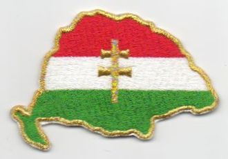
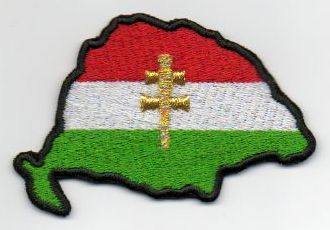
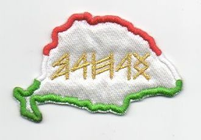
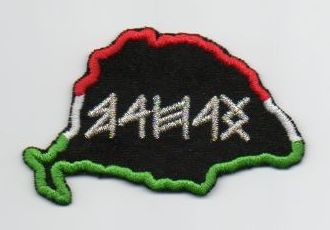
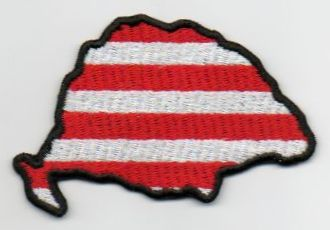
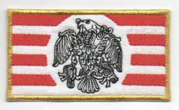
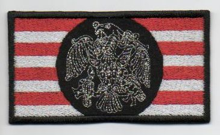
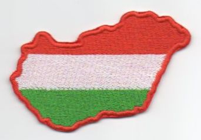
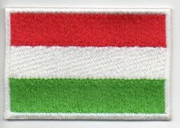

|  | Felvarrható Nagy-Magyarország, arany kontúrral, 8 cm széles cikkszám: 1207 |
350 Ft/db |
|  | Felvarrható Nagy-Magyarország, fekete kontúrral, 8 cm széles cikkszám: 1208 |
350 Ft/db |
|  | Felvarrható Nagy-Magyarország, rovásírással, fehér alapon, 7,5 cm széles cikkszám: 1209 |
250 Ft/db |
|  | Felvarrható Nagy-Magyarország, rovásírással, fekete alapon, 7,5 cm széles cikkszám: 1210 |
250 Ft/db |
|  | Felvarrható Nagy-Magyarország, Árpád-sávos, 7,5 cm széles cikkszám: 1211 |
300 Ft/db |
|  | Felvarrható rakamazi turul, fehér alapon, 9 cm széles cikkszám: 1212 |
350 Ft/db |
|  | Felvarrható rakamazi turul, fekete alapon, 9 cm széles cikkszám: 1213 |
350 Ft/db |
|  | Felvarrható Magyarország, 8 cm széles cikkszám: 1214 |
270 Ft/db |
|  | Felvarrható magyar zászló, 7,5 cm széles cikkszám: 1215 |
400 Ft/db |
tovább: MAGYAR CÍMEREK